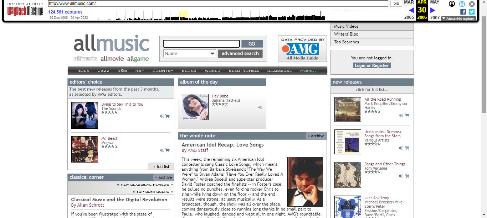
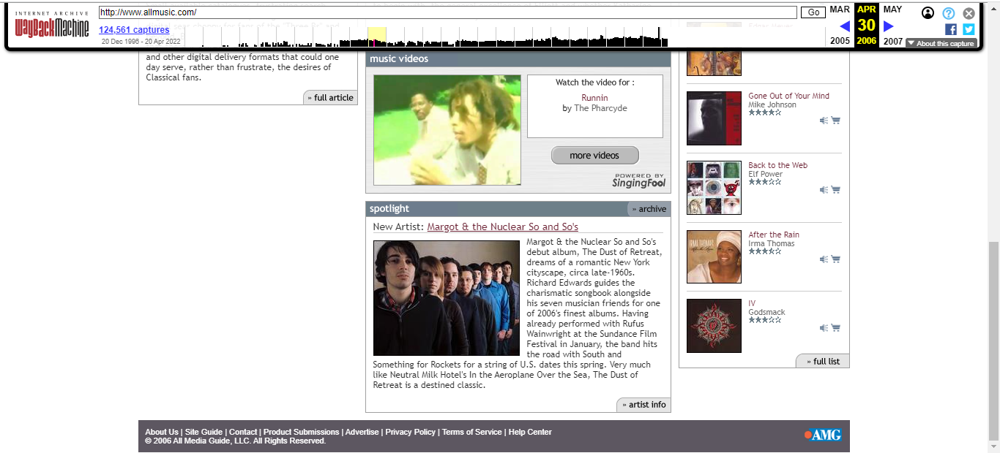
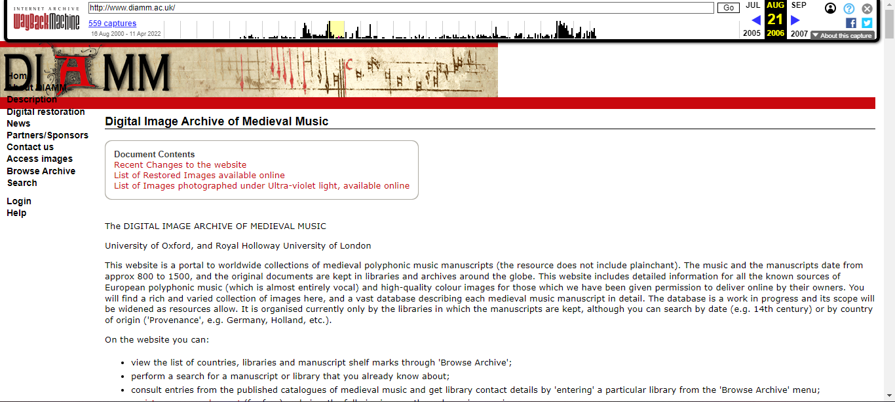
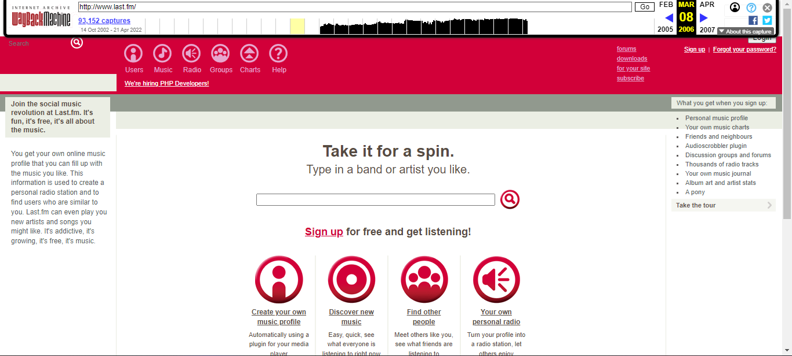
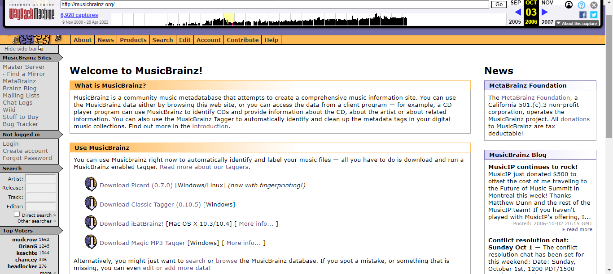

By 2006, usability and flexibility came to the forefront of web design. Negative space began to be adopted, and websites slowly became less cluttered with images, gifs, and other buttons and counters. Color schemes and content placement became important parts of website design, and the complete change in website design is reflected below in some of the databases.


AllMusic's change from a bright, attention-grabbing website with little clutter changed to a more neutral, column-based website. They did continue with real-life correlations, with the genre buttons now being implemented in the navigation bar. The choice of still putting the search bar front and center on the website showcases the hope that a user would just directly search for information but by choosing to put more content on the home page, underneath the search bar, a user could easily be distracted and almost forget what they were looking for in the first place. While overwhelming the user with content may have been popular at the time, it soon fell out of fashion as users began wanting to find information quickly, and not endlessly scrolling to find something they wanted.

With the adoption of a new logo, DIAMM's 2006 website reflects a new color scheme and layout. The website is still rather simple, utilizing mostly only text and a side navigation bar (which did not load properly in any of the crawls for 2006). However, the endless scrolling of updates could be overwhelming to a user, even if it was meant to be helpful. There was some complexity, with the navigation expanding when navigating to an inner page, but the inability to see third level links (Financial Support) unless you were in the second level (Partners/Sponsors) could cause user confusion and frustration when searching for information if they did not know where exactly the information belonged.

In the two years since the last crawl, Last.FM's website also underwent a rather large overhaul. Changing from a rather simple, bare early 2000s website, the 2006 website has a new color scheme and logo icons to catch a user's eye. We also start to see elements of the website that are still there to this day, such as the scrobble counter. The change to put the search bar at the bottom, instead of at the type, showcases the strategy of Last.fm wanting a user to register, and be incentivized by being able to track their own music streaming, rather than focusing on having a user search for artist recommendations blindly.

MusicBrainz's 2006 website is almost identical to the 2000 version, with small design changes. These design changes were naturally brought on as the website grew in size, and needed to present more information logically on its main page. The navigational sidebar largely remained the same, with the biggest change being the embedded search in the sidebar. For the menu on the top, a drop-down was established for those elements, which would appear when you would hover over the corresponding link.
The Spotify we know of now was drastically different when the site first launched in 2006. This screenshot is actually from before the site officially launched, which accounts for the barrenness of the website. Regardless, even in its bare bones, the site is rather straightforward, with the minimal navigation reflecting the website's needs and the branding and color choices eye-catching enough for a user to be intrigued enough to enter their email to be notified when the website does go online.